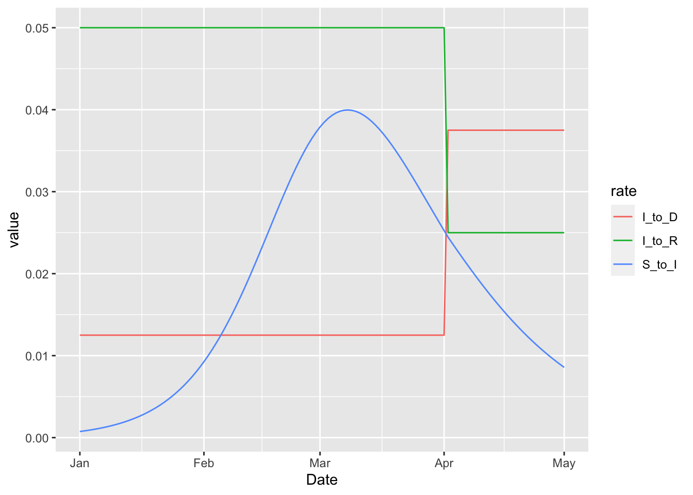
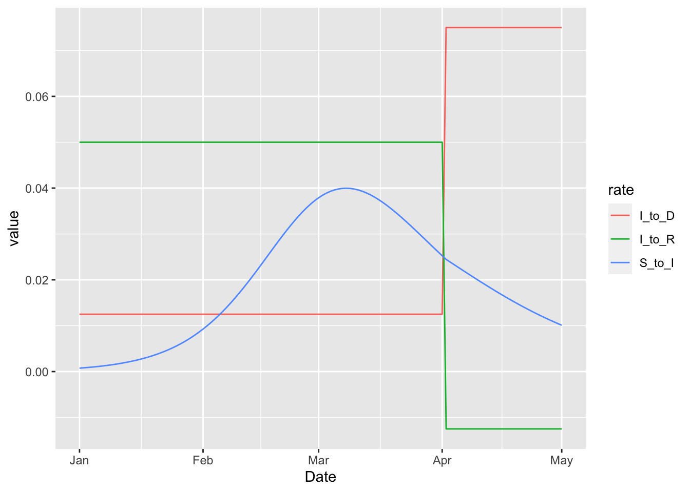
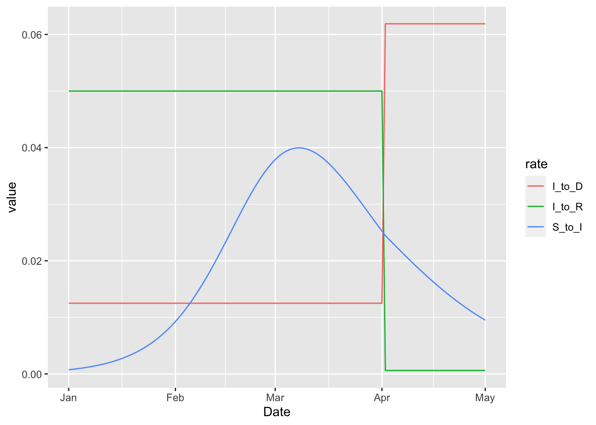

16 Troubleshooting
16.1 NaN-Valued Objective Function
16.1.1 Simulated time-series close to zero
When the simulated values that are being compared with data are close to zero (e.g. less than 1e-12), the negative binomial loss function often returns NaN. This can be fixed by setting do_sim_constraint = TRUE as an argument to flexmodel or whatever model constructor is being used (e.g. make_vaccination_model). This flag causes the simulated values to pass through the following soft-thresholding function to keep the simulations, \(x\), from falling below a tolerance, \(\epsilon\).
\[ x + \frac{\epsilon}{1-(x-\epsilon)/\epsilon + (x-\epsilon)^2/\epsilon^2} \]
This tolerance can be adjusted by setting the sim_lower_bound = 1e-12. Note that both do_sim_constraint and sim_lower_bound can be set using the global options MP_default_do_sim_constraint and MP_default_sim_lower_bound.
16.1.2 Negative rate matrix elements
These can arise naturally due to time-varying parameters that appear in 1-x terms in rate formulas. The best way to avoid this is to use the abs type of time-variation, so that logit transformations can be used directly on the changing parameters. This approach ensures that the parameter never leaves the interval between zero and one. It is also possible to update changing parameters on the logit scale, which would also solve this problem. See the Model of Piece-Wise Time-Variation for more details.
To illustrate this use of the logit-scale time-variation model, we use a modified SIR model in which a certain proportion of infected individuals die at the end of the infection period. This proportion is increased at April 1 by three-times the previous value.
sir_with_death = (
flexmodel(
params = c(
tau = 16, # infected period
beta = 0.15, # transmssion rate
p = 0.2 # proportion who die at the end of the infected period
),
state = c(S = 20000, I = 100, R = 0, D = 0),
start_date = "2000-01-01",
end_date = "2000-05-01",
do_hazard = TRUE
)
%>% add_state_param_sum("N", "^(S|I|R)$")
%>% add_rate("S", "I", ~ (1/N) * (beta) * (I))
%>% add_rate("I", "R", ~ (1/tau) * (1-p))
%>% add_rate("I", "D", ~ (1/tau) * (p))
)
plot_with_death_rates = function(value, type) {
(sir_with_death
%>% update_piece_wise(
data.frame(
Date = "2000-04-01",
Symbol = "p",
Value = value,
Type = type
))
%>% simulation_history
%>% pivot_longer(-Date, names_to = "rate")
%>% filter(grepl("_to_", rate))
%>% ggplot
+ geom_line(aes(Date, value, colour = rate))
)
}
plot_with_death_rates(3, 'rel_prev')
In this example the rate at which infected individuals die becomes higher on April 1. This increase necessarily corresponds to a drop in the rate at which infected individuals live, but the drop does not push the rate below zero in this case. But importantly there are no structural restrictions that keep the rates positive when the 'rel_prev' method is used. We can illustrate this by increasing the multiplier from three to six.

Note that we have suppressed warnings about negative rates, which are clearly visible on the plot above. These negative rates can be completely avoided by specifying the increase on the logit scale with the 'rel_prev_logit' type.

This means that the log-odds of death after infection additively increases by six on April 1. The log odds could be made as high as one wants, and the rate at which infected individuals live would never drop below zero.
16.1.3 Optimizer tries very large dispersion parameters
For some reason the TMB dnbinom2 function cannot handle large dispersion parameters, even though the standard R dnbinom function seems fine with them. Nevertheless, this entire issue can be avoided by setting priors on the dispersion parameters. In the future we might try to exploit the fact that the limit of the log negative binomial density as the dispersion parameter gets large tends to the log poisson density. Such an improvement is not entirely trivial due to the need for maintaining differentiability.